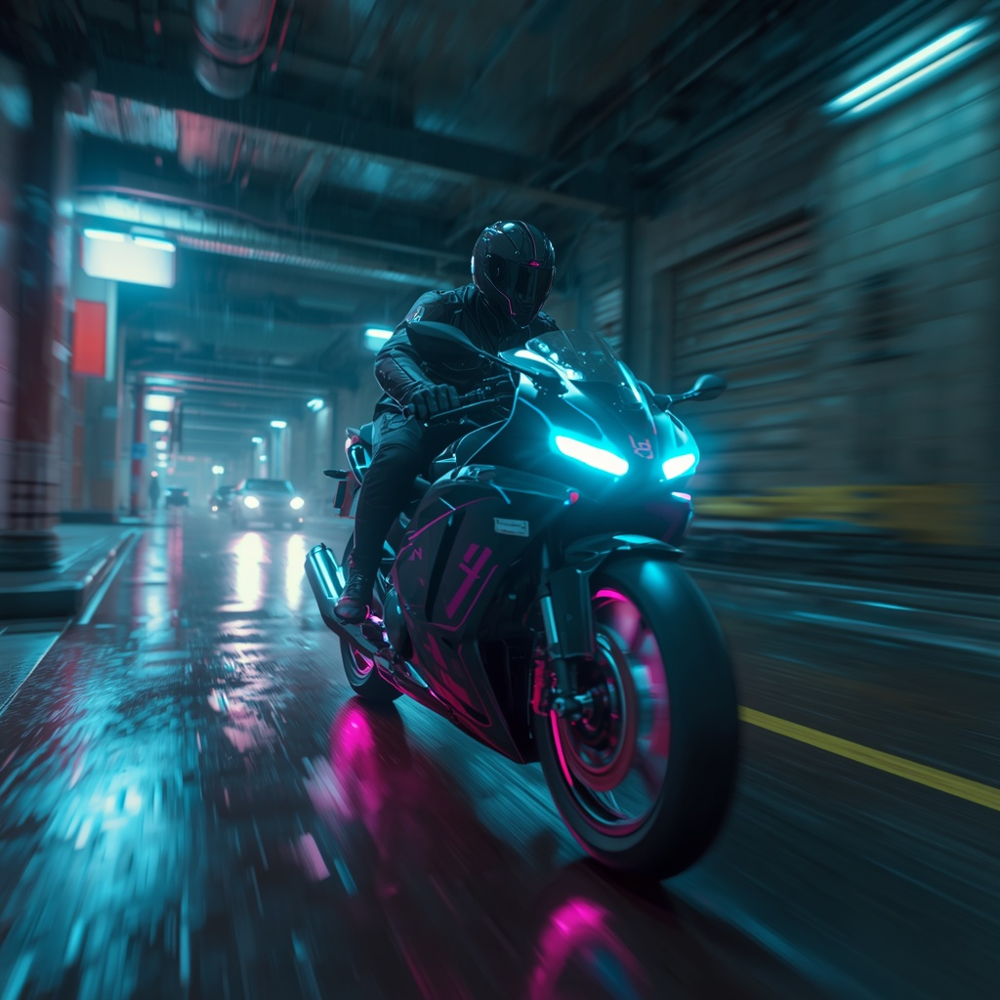

01. Velocidade Ilegal
Pilote sua moto voadora por túneis subterrâneos, atalhos perigosos e corredores estreitos. Seus reflexos rápidos são sua única vantagem.
A cidade não dorme. E a morte não espera.
Você não entrega pacotes. Você entrega destinos.
Entrar no SubmundoA chuva nunca para. Os neons nunca apagam. Nas profundezas de uma metrópole dominada por megacorporações, a lei é apenas mais uma mercadoria à venda.
Você é um entregador clandestino cruzando túneis esquecidos e becos proibidos a bordo de uma moto voadora, transportando cargas que muitos matariam para recuperar.
Cada entrega é uma aposta contra o tempo, drones de perseguição e forças corporativas. Não diminua a velocidade.

Pilote sua moto voadora por túneis subterrâneos, atalhos perigosos e corredores estreitos. Seus reflexos rápidos são sua única vantagem.
Fuja de drones armados, bloqueios corporativos e forças de segurança. Cada entrega pode transformar você no alvo mais procurado da cidade.
Aprimore sua moto, domine rotas clandestinas e prepare-se para entregas cada vez mais arriscadas. Na UnderCity, cada segundo conta.
🎧 Neon Courier: UnderCity — Main Theme
Dark Synthwave / 80s Cyberpunk Chase — Criada com Suno AI
▶ Ouvir Trilha Sonora no Suno"Neon Courier: UnderCity transforma cada corrida em uma fuga cinematográfica. Uma experiência eletrizante onde a velocidade é sua única esperança."— NEON PULSE MAGAZINE
Prepare seu motor. Escolha sua rota. Entre para o submundo.
Adicionar à Lista de Desejos